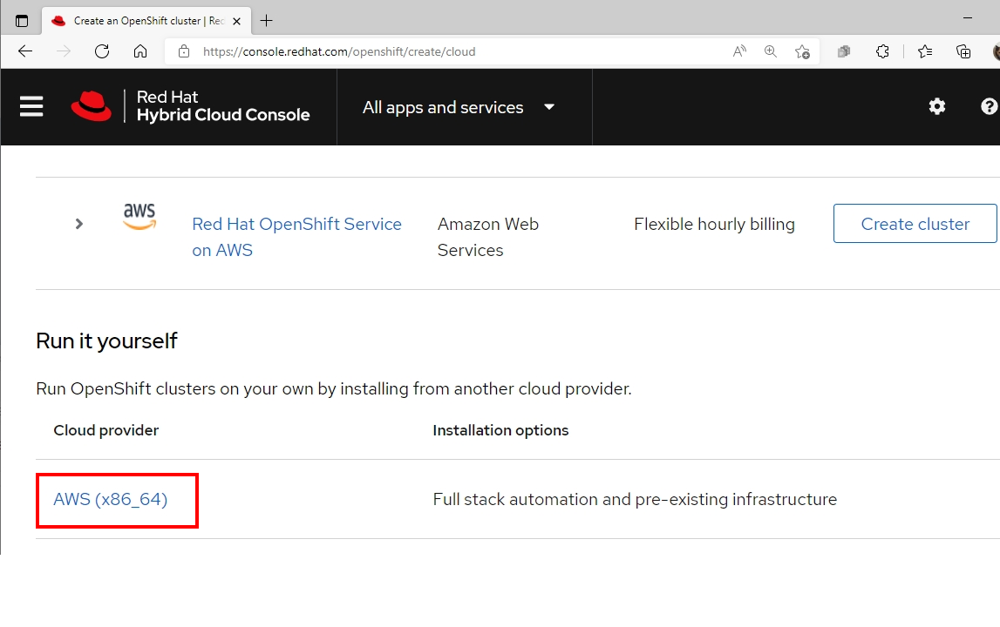

Installation on AWS
Prerequisites
- Public Hosted Zone and map to DNS in Route 53 service
- AWS Account with Programmatic Acesss and AdministratorAccess Policy included
- Access Key ID of AWS Account
- Secret Access Key Values of AWS Account
- AWS Public regions for deploy Openshift Cluster
- Pull secret from https://cloud.redhat.com
- Evaluation subscription can be found at try.openshift.com
- Internet Access during installation process
- Generating a Key Pair for cluster node with SSH Access
Default CPU , memory and Disk sizing for Openshift node after finish deployment
| Node Type | vCPU | Mem(GiB) | Storage (GB) |
|---|---|---|---|
| Control Plane | 4 | 16 | 100 |
| Compute | 2 | 8 | 100 |
Preparation
prepare the bastion server to install OpenShift Container Platform. This includes installing the AWS Command Line Interface , the OpenShift Installer , and the OpenShift CLI
Connect to your administration host
ssh <user name>@bastion.<Domain Name>Switch to root using the sudo command
sudo -iInstall the AWS CLI Tool
curl "https:/s3.amazonaws.com/aws-cli/awscli-bundle.zip" -o "awscli-bundle.zip"
unzip awscli-bundle.zip
./awscli-bundle/install -i /usr/local/aws -b /bin/aws
aws --version
Install OpenShift CLI Tools
- Download OpenShift Installer and OpenShift Client (oc) from here
Install OpenShift Installer
tar zxvf <OpenShift-Installer> -C /usr/bin chmod +x /usr/bin/openshift-installInstall OpenShift Client (oc)
tar zxvf <OpenShift Client> -C /usr/bin chmod +x /usr/bin/ocOptional: setup bash completion
openshift-install completion bash >/etc/bash_completion.d/openshift-install oc completion bash >/etc/bash_completion.d/openshift
Set your AWS credentials to $HOME/.aws/credentials
Install OpenShift
Get pull secret from cloud.redhat.com
Login to cloud.redhat.com

Navigate to OpenShift Menu->Create Cluster->Run it yourself->AWS (x86_64) on run it your self->Installer-provisioned-infrastructure

Copy pull secret

Save your pull secret for use later
Create an SSH keypair to be used for your Openshift environement
ssh-keygen -f ~/.ssh/cluster-{Name}-key -N ''Run OpenShift Installer for interactive installation
openshift-install create cluster --dir <installation_directory>Input your cluster configuration
? SSH Public Key /home/<user_name>/.ssh/cluster-{Name}-key.pub ? Platform aws INFO Credentials loaded from the "default" profile in file "/home/<user_name>/.aws/credentials" ? Region <your AWS Region> ? Base Domain <your AWS Domain> ? Cluster Name <your AWS Cluster Name> ? Pull Secret [? for help] ***************************************************************************************************************************************************************Sample output
INFO Creating infrastructure resources... INFO Waiting up to 20m0s for the Kubernetes API at https://api.cluster-e9eb.sandbox1409.opentlc.com:6443... INFO API v1.19.0+e49167a up INFO Waiting up to 30m0s for bootstrapping to complete... INFO Destroying the bootstrap resources... INFO Waiting up to 40m0s for the cluster at https://api.cluster-e9eb.sandbox1409.opentlc.com:6443 to initialize... INFO Waiting up to 10m0s for the openshift-console route to be created... INFO Install complete! INFO To access the cluster as the system:admin user when using 'oc', run 'export KUBECONFIG=/home/wkulhane-redhat.com/cluster-e9eb/auth/kubeconfig' INFO Access the OpenShift web-console here: https://console-openshift-console.apps.cluster-e9eb.sandbox1409.opentlc.com INFO Login to the console with user: kubeadmin, password: *************** INFO Time elapsed: 32m6sset up the OpenShift CLI
export KUBECONFIG=$HOME/cluster-{NAME}/auth/kubeconfig echo "export KUBECONFIG=$HOME/cluster-{NAME}/auth/kubeconfig" >>$HOME/.bashrcValidate your clusters
Check that you are cluster administrator
oc whoamiOutput
system:adminValidate that all nodes have a status of Ready
oc get nodesOutput
NAME STATUS ROLES AGE VERSION ip-10-0-132-239.us-east-2.compute.internal Ready master 24m v1.19.0+e49167a ip-10-0-147-206.us-east-2.compute.internal Ready worker 17m v1.19.0+e49167a ip-10-0-169-195.us-east-2.compute.internal Ready worker 19m v1.19.0+e49167a ip-10-0-184-201.us-east-2.compute.internal Ready master 24m v1.19.0+e49167a ip-10-0-200-125.us-east-2.compute.internal Ready worker 19m v1.19.0+e49167a ip-10-0-212-189.us-east-2.compute.internal Ready master 24m v1.19.0+e49167a
OpenShift Architecture